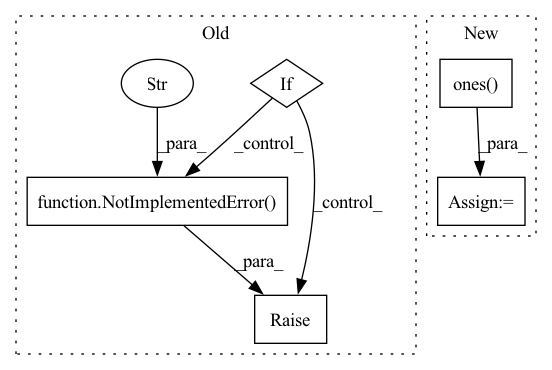

Pattern ID :1610
Before Change
if config["mask_type"] == "hole":
result = x * (1. - mask)
elif raise NotImplementedError("Not implemented mask type." )
return result, maskAfter Change
height, width, _ = config["image_shape"]
max_mask = x.shape[0]
result = torch.ones_like(x)
mask = torch.ones(size=[x.shape[0], 1, x.shape[2], x.shape[3]])
for i in range(max_mask):
mask_temp = random_mask(height=height, width=width)
mask_temp = torch.tensor(mask_temp, dtype=torch.float32)
if x.is_cuda:
mask_temp.cuda()
result[i, :, :, :] = x[i, :, :, :] * (1. - mask_temp)
mask[i, :, :, :] = mask[i, :, :, :] * mask_temp
return result, mask
In pattern: SUPERPATTERN
Frequency: 3
Non-data size: 5
Instances Fragment ID: 7441825
Project Name: sayednadim/global-and-local-attention-based-free-form-image-inpainting
Commit Name: 76ff7604018fa398ac445982097becbe3fc20e3a
Time: 2020-08-16
Author: smnadimuddin@gmail.com
File Name: model/mask.py
M Class Name: AnonimousClass
N Class Name: AnonimousClass
M Method Name: mask_image(2)
N Method Name: mask_image(2)
M Parent Class:
N Parent Class:
M File Name: model/mask.py
N File Name: model/mask.py
M Start Line: 56
M End Line: 72
N Start Line: 49
N End Line: 59
Before Change
if dtype is None:
dtype = torch.get_default_dtype()
if dtype in {torch.complex64, torch.complex128}:
raise NotImplementedError("Complex hypervectors are not supported yet." )
if dtype == torch.uint8:
raise ValueError("Unsigned integer hypervectors are not supported.")
After Change
num_embeddings, embedding_dim, dtype=dtype, device=device
)
angle.uniform_(-math.pi, math.pi)
magnitude = torch.ones(
num_embeddings, embedding_dim, dtype=dtype, device=device
)
result = torch.polar(magnitude, angle)
result.requires_grad = requires_grad
return result Fragment ID: 7441827
Project Name: hyperdimensional-computing/torchhd
Commit Name: 1f7e9dbf92a4a1be0d4285b6ccd7231afa85c2a3
Time: 2022-06-07
Author: mikeheddes@gmail.com
File Name: torchhd/functional.py
M Class Name: AnonimousClass
N Class Name: AnonimousClass
M Method Name: random_hv(0)
N Method Name: random_hv(0)
M Parent Class:
N Parent Class:
M File Name: torchhd/functional.py
N File Name: torchhd/functional.py
M Start Line: 132
M End Line: 135
N Start Line: 178
N End Line: 193
Before Change
:return: attention result of shape (B, N, F) where B is the batch size, N the query sequence length
and F the number of output channels (= `num_output_channels`)
if attn_mask is not None:
raise NotImplementedError("attention masks not supported yet" )
q = self.q_proj(x_q)
k = self.k_proj(x_kv)
v = self.v_proj(x_kv)After Change
i = q.shape[2]
j = k.shape[2]
causal_mask = torch.ones( (i, j), device=x_q.device, dtype=torch.bool) .triu(j - i + 1)
attn.masked_fill_(causal_mask, attn_max_neg)
attn = attn.softmax(dim=-1) Fragment ID: 7441832
Project Name: krasserm/perceiver-io
Commit Name: c2b9af32775fd28f693dd1b572142935efd31b99
Time: 2022-09-25
Author: krasserm@googlemail.com
File Name: perceiver/model/core/modules.py
M Class Name: MultiHeadAttention
N Class Name: MultiHeadAttention
M Method Name: forward(6)
N Method Name: forward(5)
M Parent Class: nn.Module
N Parent Class: nn.Module
M File Name: perceiver/model/core/modules.py
N File Name: perceiver/model/core/modules.py
M Start Line: 64
M End Line: 93
N Start Line: 75
N End Line: 120